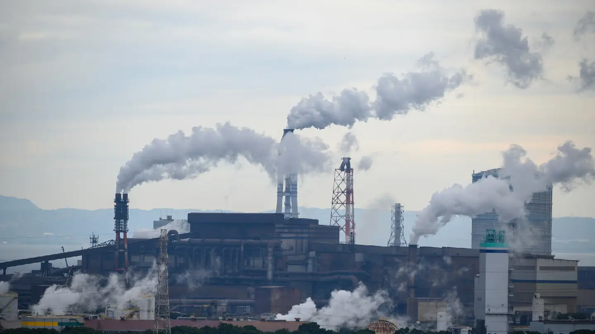
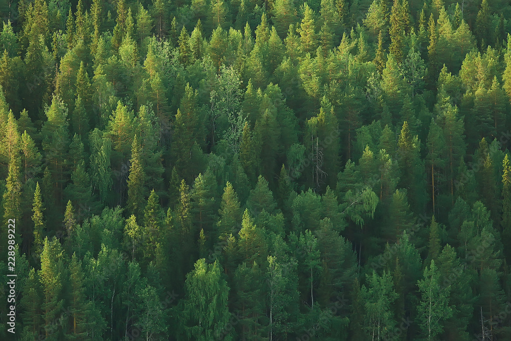
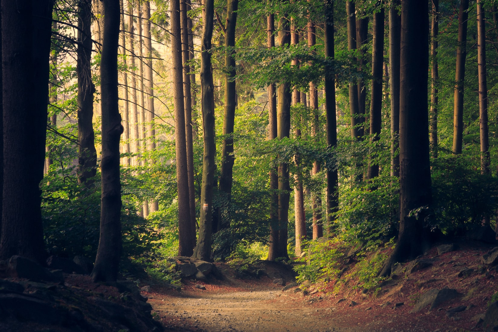

Vse okoli sveta so tovarne in elektrarne, ki so slabe za nas planet
Z tovarnami, ki so se zacele v industriski revoluciji leta 1760 smo ljudje dobili veliko prostih deovnih mest, ampak vse te tovarne so slabe za nas planet.
Tovarne igrajo pomembno vlogo v sodobnem svetu, saj proizvajajo številne izdelke, ki jih vsakodnevno uporabljamo. Vendar pa ima industrijska proizvodnja tudi temno plat, saj močno vpliva na okolje in zdravje našega planeta.
Ena največjih težav je onesnaževanje zraka. Tovarne pogosto izpuščajo velike količine toplogrednih plinov, kot je ogljikov dioksid (CO₂), ki prispeva k globalnemu segrevanju. Poleg tega se v ozračje sproščajo tudi druge škodljive snovi, kot so žveplov dioksid, dušikovi oksidi in različni prašni delci, ki lahko povzročajo bolezni dihal in škodujejo zdravju ljudi in živali.
Tovarne onesnažujejo tudi vode. Odpadne kemikalije, ki jih pri proizvodnji uporabljajo, pogosto končajo v rekah, jezerih in morjih, kjer uničujejo vodne ekosisteme. Ribiške populacije upadajo, rastline in živali umirajo, pitna voda pa postaja vse bolj onesnažena.
Poleg tega industrijska proizvodnja porablja ogromne količine naravnih virov, kot so voda, energija in surovine. To vodi v prekomerno izkoriščanje narave, izsekavanje gozdov in uničevanje življenjskih okolij za številne živalske vrste. Velikokrat to pomeni, da mnoge živali izgubijo svoj dom in so zaradi tega ogrožene ali celo izumirajo.
Vse to kaže, da moramo nujno razmisliti o bolj trajnostnih načinih proizvodnje. Zmanjšanje izpustov, boljši nadzor nad odpadki, uporaba obnovljivih virov energije in recikliranje so le nekateri koraki, s katerimi lahko zmanjšamo škodljive vplive tovarn na naš planet.
Če želimo ohraniti zdrav planet za prihodnje generacije, moramo ravnati odgovorno – kot posamezniki, kot družba in kot industrija.
In to je nas sanski planet
Na čistem sanjskem planetu je zrak svež in čist. Nobenega smoga, nobenih strupenih plinov – samo vonj
narave, cvetlic in gozda. Ljudje se lahko globoko nadihajo brez skrbi za svoje zdravje.
Reke, jezera in oceani so kristalno čisti. Ribe plavajo svobodno, koralni grebeni so polni barv, in na obalah ni niti sledu o plastiki. Voda je varna za pitje že kar iz narave.
Vse, kar potrebujemo, pridobivamo na trajnosten način. Energija prihaja iz sonca, vetra in vode. Tovarne so zelene, tihe in brez škodljivih izpustov. Odpadki se reciklirajo ali kompostirajo – skoraj ničesar ne zavržemo.
Gozdovi pokrivajo večji del kopnega. Živali in rastline živijo v miru, brez nevarnosti, da bi izgubile svoj dom. Ljudje skrbno varujejo naravo, sadijo drevesa in spoštujejo vse živo.
Gozdovi pokrivajo večji del kopnega. Živali in rastline živijo v miru, brez nevarnosti, da bi izgubile svoj dom. Ljudje skrbno varujejo naravo, sadijo drevesa in spoštujejo vse živo.
Mesta so polna zelenih površin, parkov in vrtov. Promet je tih in električen, ali pa ljudje uporabljajo kolesa in javni prevoz. Nihče ne hiti – vsi imajo čas za naravo in drug drugega.
Mesta so polna zelenih površin, parkov in vrtov. Promet je tih in električen, ali pa ljudje uporabljajo kolesa in javni prevoz. Nihče ne hiti – vsi imajo čas za naravo in drug drugega.
Otroci se učijo, kako skrbeti za planet že v šolah. Vsakdo prispeva po svojih močeh – z malimi dejanji, ki skupaj naredijo veliko razliko.